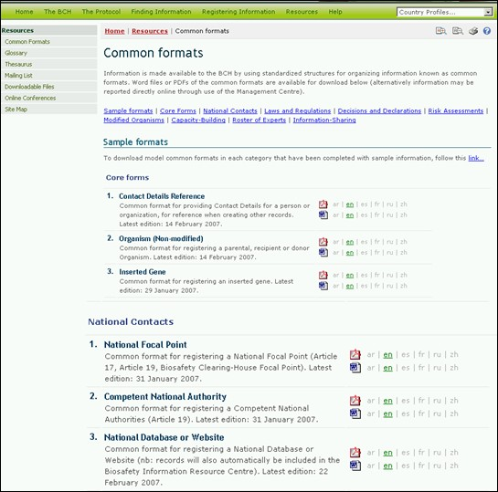

Common formats are provided to standardize the structure and organization of the information in the BCH databases. Use of these formats improves the efficiency of the BCH Central Portal and ensures easy and predicable access to information.
The common formats are the basis of the online entry forms in the Management Centre.

Figure 44
The Common formats page provides links to MS Word and PDF files of the common formats for the following categories of information:
1. Core forms
- Contact Details Reference
- Organism (Non-modified)
- Inserted Gene
- National Focal Point
- Competent National Authority
- National Database or Website
- National Law, Regulation or Guideline
- Bilateral, Regional or International Agreement or Arrangement
- Decision on LMO under Advance Informed Agreement
- Decision on LMO FFP under Article 11
- Other Decision, Declaration or Notification
- Risk Assessment
- LMO – Unique Identification
7. Capacity-Building Activities
- Capacity-Building Needs and Priorities
- Capacity-Building Opportunity
- Capacity-Building Project
- Academically-Accredited Biosafety Course
- Biosafety Expert
- Report on Biosafety Expert Assignment
9. Information-Sharing and Other Resources
- Biosafety Information Resource
- Biosafety Organization
- Socioeconomic Consideration